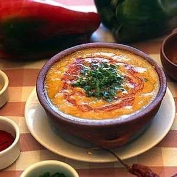

Receta infalible del 25 de Mayo

La historia
Receta
Esta receta comienza la noche anterior
- Cortar las verduras en rodajas bien finitas, las calabazas en cubos,
y dejar los porotos y el maíz en remojo
- Olla al fuego (bajo), agregar aceite y dejar sudar la cebolla, una vez
que este transparente agregar la calabaza.
- Una vez que esten blandas las verduras, agregar las legumbres y
tapar de agua.
- Dejar cocinando por 1 hora y media a fuego medio, revolviendo cada
tanto.
- Para la salsita: picar el morrón, 1 cebolla de verdeo y 1 cebolla.
- Agregar ají molido, pimentón y orégano. Cocinar a fuego bajo en
abundante aceite hasta que este blanda la cebolla.
- Servir locro con salsa y cebolla de verdeo (parte verde).
A continuación dejamos un vídeo explicativo
También agregamos un mapa para que se ubiquen